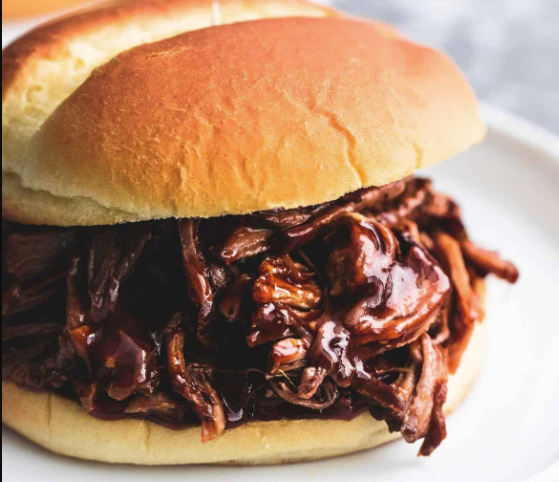

Instant Pot BBQ Pulled Pork
Serves: 6
Prep Time: 15 min
Cook Time: 45 min
Calories: 605 per serving

Description
Today, I’m going to teach you how to make super juicy and tender bbq pulled pork in your Instant Pot or pressure cooker.
This recipe is great for family dinners, office potlucks, or even throughout the week as prepped meals. It's best in the summer with a side of mac and cheese and collard greens, but can be enjoyed year-round!
Ingredients
-
3 pound pork shoulder cut into 4 large chunks
-
1 can coca cola - may sub dr pepper or root beer
-
2.5 cups bbq sauce - see note
-
1/3 cup brown sugar
-
4 tablespoons apple cider vinegar
-
2 teaspoons garlic powder
-
1 teaspoon onion powder
-
6 hamburger buns - for serving
Steps
-
Add pork to a lightly greased pressure cooker/instant pot. Pour coca cola over the pork.
-
Stir together 2 cups bbq sauce, brown sugar, apple cider vinegar, garlic powder, and onion powder. Pour over pork.
-
Place lid on the pressure cooker, sliding into the locked position. Set to pressure cook for 45 minutes. Do a natural release for 10 minutes, then turn valve to the vent position. Once float valve has dropped, remove lid.
-
Use two forks to shred pork into small chunks. Use a slotted spoon to transfer pork to a bowl (discard liquid from pressure cooker) and stir remaining 1/2 cup bbq sauce with shredded pork.
-
Serve pulled pork on hamburger buns. Optional sandwich toppings to take your pulled pork to the next level: mayo, extra bbq sauce, and cole slaw.